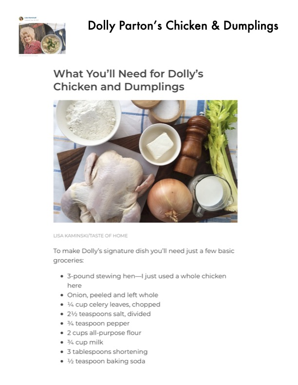

Dolly Parton's Chicken & Dumplings

Original cookbook page 227
Dolly Parton's signature dish - homemade chicken and dumplings with tender chicken, fluffy dumplings, and a rich homemade broth. Recipe by Lisa Kaminski from Taste of Home.
Prep: 30 minutes • Cook: 1 hour 15 minutes • Total: 1 hour 45 minutes
Ingredients
- 3-pound stewing hen (or a whole chicken)
- 2 quarts water
- 1 onion, peeled and left whole
- ¼ cup celery leaves, chopped
- 2½ teaspoons salt, divided
- ¾ teaspoon pepper
- 2 cups all-purpose flour
- ¾ cup milk (whole milk or buttermilk)
- 3 tablespoons shortening
- ½ teaspoon baking soda
Instructions
- Add two quarts of water to a Dutch oven (5-quart or larger). Add 2 teaspoons salt and the chicken. Cover and bring to a boil.
- Once boiling, reduce heat to a simmer. Add pepper, celery leaves, and the whole peeled onion. Cover and simmer until chicken starts to come away from the bone, about 40 minutes to 1 hour.
- When chicken is tender, turn off heat and remove chicken to cool. Strain the broth through a mesh sieve. Remove meat from bones, discarding bones and skin. Cut larger pieces into 1-inch pieces.
- Return strained broth to Dutch oven and bring to a boil. Meanwhile, make dumpling dough: Whisk together flour, remaining ½ teaspoon salt, and baking soda.
- Cut shortening into flour mixture until in pea-sized pieces. Stir in milk until dough comes together.
- Turn dough onto lightly floured surface and knead for 3-5 minutes. Roll out to ½ inch thick and cut into 1-1½ inch squares.
- Carefully spoon dumplings into boiling broth. Cover and cook for 10 minutes.
- Stir in cooked chicken and cook until heated through, just a few more minutes. Garnish with cracked pepper and fresh parsley.
📝 Recipe Notes
Recipe can be paused after step 3 - refrigerate broth and chicken overnight if desired. The broth should be satisfying enough to sip plain. Dumplings will be fluffy outside with a slightly dense interior - 'textbook dumpling' texture. This is Dolly Parton's signature dish. Recipe spans pages 227-231.
Recipe #227 from collection